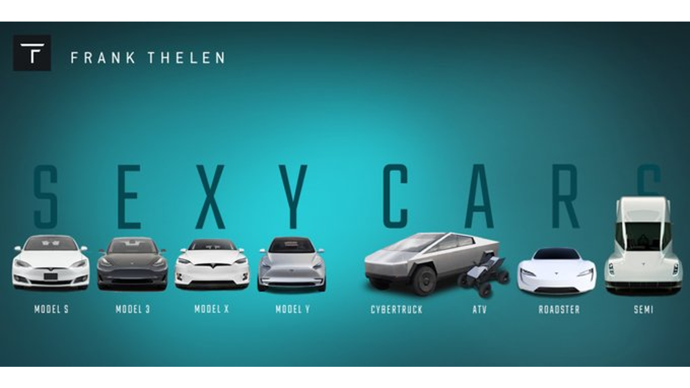

Tesla Motors, renommé Tesla Inc. depuis 2017,
est le premier constructeur automobile de voitures électriques
et est actuellement dirigé par Elon Musk. Leur tesla model 3
est même devenue la voiture la plus vendue en Europe
en septembre 2021. La mission principale de la société est
d'accélérer la transition vers un schéma énergétique durable.
C'est pour cela qu'en 2016, la fusion avec l'entreprise SolarCity
a permis l'ajout de panneaux et tuiles photovoltaïques
aux produits de la société. L'objectif de Tesla Inc. est
de produire des véhicules électriques qui se distinguent des
autres par les performances et les technologies embarquées.
Présenter de cette façon par la marque, leur but est aussi que ces véhicules soient
"sexy"; en démontrent leurs 4 projets far : les Tesla Model
S, 3, X, et Y et par les 4 autres moins connus qui forment : "S3XY CARS".

Tesla Autopilot
La fonction d'Autopilote est encore en développement,
il s'agit (pour l'instant) d'une aide à la conduite qui
a pour but de finalement devenir un pilotage automatique total.
L'autopilote complet déjà utilisé aux USA rencontre encore
quelques problèmes; c'est pourquoi il est interdit en France mais
voila une vidéo enregistrer par Tesla de l'autopilote
complet en action sur les routes américaines.